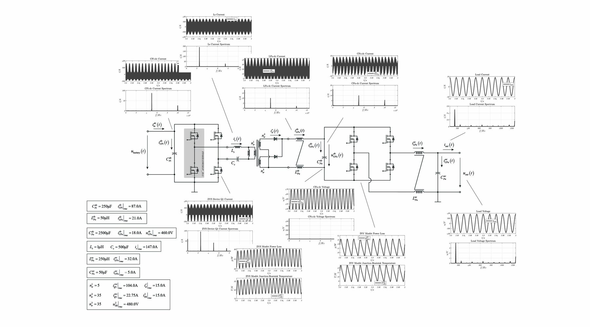

Single-phase UPS, 6 kVA
Complete electrothermal simulation of a 6 kVA single-phase UPS power chain, its control architecture and the selection of the main components.

What it is
A design study for a small single-phase UPS: the whole power chain, from the input stage through the DC link to the output inverter and its filter, simulated in Simscape with device loss and thermal models.
The point of the exercise is component selection: inductors, capacitors and semiconductors are chosen against the currents, voltages and temperatures that come out of the simulation rather than from rules of thumb, and the control architecture is verified on the same model.
What the study covers
- Electrothermal simulation of the complete chain at rated load.
- Control architecture of the input and output stages.
- Selection of the main components with the simulated stresses as the specification.
Figures
